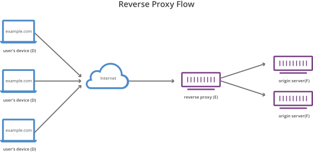
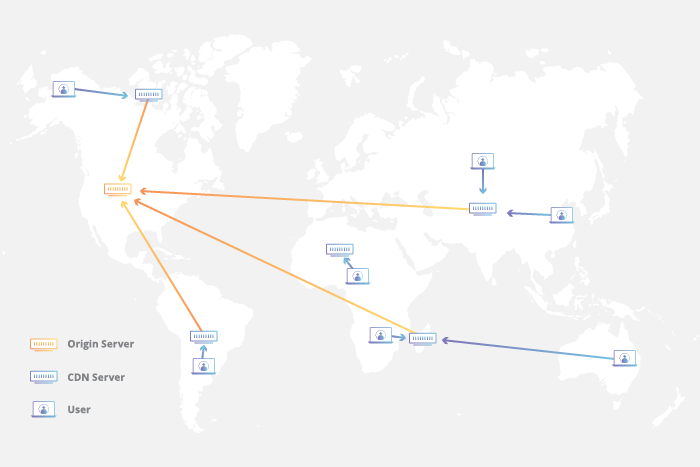

Web
REST
## <i class="fas fa-tasks"></i> Overview of Today's Class - Asynchronous Programming
## <i class="fa-solid fa-graduation-cap"></i> Educational Objectives On completion of this part, students will be able to: - Describe the REST architecture - Explain the constraints of the REST architecture
Representational state transfer (REST)
## <i class="fas fa-network-wired"></i> What is a RESTful API? **API** (**A**pplication **P**rogramming **I**nterface): a set of clearly defined methods of communication between various software components. **RESTful API**: API that respects the constraints of the REST architecture.
## <i class="fas fa-network-wired"></i> Representational state transfer (REST) **REST** stands for **RE**presentational **S**tate **T**ransfer. It is a software architectural style defined by the following constraints for creating services. - Client-server - **Uniform Interface** - **Stateless** - **Cache** - **Layered System** - Code-On-Demand (Optional) These constraints fit well with HTTP, but can be used with other protocols as well. https://ics.uci.edu/~fielding/pubs/dissertation/rest_arch_style.htm
## <i class="fas fa-network-wired"></i> Uniform Interface The interface between any components should be uniform. In the context of the HTTP protocol, this translates to: - Identification of resources (e.g. URI) - Manipulation of resources (e.g. GET, POST, PUT, DELETE, PATCH, HEAD) - Self-descriptive messages (e.g. Content-Type: application/json) - Hypermedia as the engine of application state (HATEOAS) https://ics.uci.edu/~fielding/pubs/dissertation/rest_arch_style.htm Notes: HATEOAS describes the constraint that hypermedia (an extension of hypertext that can support other types of media) should be what drives the state transitions of the application. The client should be able to navigate the application by traversing hypermedia links returned from the server, meaning it does not need to know a lot about the application before hand.
## <i class="fas fa-hand-paper"></i> Uniform Interface In the following example, identify the architectural constrains of the uniform interface. ```http GET https://api.github.com/users/royfielding ``` ```http HTTP/1.1 200 OK Content-Type: application/json; charset=utf-8 { "name": "Roy T. Fielding", "company": "Adobe", "blog": "http://roy.gbiv.com/", "location": "Tustin, California", "login": "royfielding", "id": 1724757, ... "following_url": "https://api.github.com/users/royfielding/following{/other_user}", "gists_url": "https://api.github.com/users/royfielding/gists{/gist_id}", "starred_url": "https://api.github.com/users/royfielding/starred{/owner}{/repo}", } ```
## <i class="fas fa-hand-paper"></i> Uniform Interface ```http GET https://api.github.com/users/royfielding ``` ```http HTTP/1.1 200 OK Content-Type: application/json; charset=utf-8 { "name": "Roy T. Fielding", "company": "Adobe", "blog": "http://roy.gbiv.com/", "location": "Tustin, California", "login": "royfielding", "id": 1724757, ... "following_url": "https://api.github.com/users/royfielding/following{/other_user}", "gists_url": "https://api.github.com/users/royfielding/gists{/gist_id}", "starred_url": "https://api.github.com/users/royfielding/starred{/owner}{/repo}", } ``` - `GET` to describe the kind of resource manipulation. - URLs to identify resources. - `Content-Type` to make the resource self-descriptive. - `following_url`, `gists_url`, `starred_url` to provide hypermedia links.
## <i class="fas fa-network-wired"></i> Stateless Constraint All communication must be **stateless**. Client requests should contain all necessary information to be understood by the server. They should rely on no context stored on the server. This constraint induces the properties of: - **Visibility**: Monitoring only needs a single request to understand the full nature of the request. - **Reliability**: Partial failure recovery is easier. - **Scalability**: Simplifies the freeing of resources between requests, and simplifies implementation. Consequently, **Session state** in a RESTful architecture is kept entirely on the **client**. https://ics.uci.edu/~fielding/pubs/dissertation/rest_arch_style.htm Notes: Simply said, statelessness means that requests from a client are independent from each other. The server does not keep state between requests of a given client. When we update a record with a PUT request, it contains everything the server needs to update that record. Auth tokens that the client sends with a request also allows the server to not keep sessions state on the client, it can use the token in the request to authenticate the client and authorize the request. If we don't store state on the server side, it is easier to recover as we don't need to rebuild state. Scalability is also improved, because if state were kept on the server side, it would need to be synchronized across the different servers.
## <i class="fas fa-network-wired"></i> Statelessness in the Wild If the **session state** is kept entirely on the **client** and embedded in **requests**, then **any server** (or lambda function) behind a reverse proxy can compute responses. <p></p> The **serverless model**, which often refers to server-side computations that run in **stateless** compute containers, extensively rely on the **stateless** constraint.
## <i class="fas fa-network-wired"></i> Cache Constraint Responses may be cacheable. Data can implicitly or explicitly be labeled as **cacheable** or non-cacheable. If cacheable, it may be reused by the client for later equivalent requests. The cache constraint: - Improves efficiency - Eases scalability - Improves user-perceived performance On the other hand users can be exposed to stale data, impacting the consistency of the system. https://ics.uci.edu/~fielding/pubs/dissertation/rest_arch_style.htm
## <i class="fas fa-network-wired"></i> Cacheability in the Wild A content delivery network (CDN) refers to a geographically distributed group of servers which work together to provide fast delivery of Internet content. <p></p> Cacheable responses can easily be stored at the edge (close to the end-user). https://www.cloudflare.com/learning/cdn/what-is-a-cdn/
## <i class="fas fa-drum"></i> The cache joke There are only two hard things in Computer Science: - naming things - cache invalidation - (and off-by-one errors). -- Phil Karlton
## <i class="fas fa-network-wired"></i> Layered System Constraint Components of the system cannot "see" beyond the immediate layer with which they are interacting. This allows bounding the complexity of the system, and enables the deployment of intermediaries (e.g. proxies, gateways, firewalls, etc.). The primary disadvantage of layered systems is that they add overhead and latency to the processing of data, reducing user-perceived performance. https://ics.uci.edu/~fielding/pubs/dissertation/rest_arch_style.htm
## <i class="fas fa-network-wired"></i> Layered Systems with GraphQL The REST paradigm is not the only way of exposing a Web API over HTTP. Another popular choice is GraphQL. **GraphQL** is a **query language** to be used by client applications to query data from a server, and a **runtime** to fulfill those queries with your existing data. In other words, GraphQL is an **opinionated** way of building a RESTful API and of **layering** multiple data sources and services. https://www.howtographql.com/basics/1-graphql-is-the-better-rest/
## <i class="fas fa-network-wired"></i> Hand's on GraphQL Checkout the `example-graphql` repository in the `web-classroom` organisation. Run the project and try the GraphiQL interface. Follow the excellent tutorial provided by GraphQL on how to integrate GraphQL with Express. https://graphql.org/graphql-js/running-an-express-graphql-server/
## <i class="fas fa-network-wired"></i> Designing HTTP APIs REST specifies architectural principles for designing HTTP APIs. These principles are easy to break and not always necessary to follow. Sources of inspiration include popular APIs such as the one provided by Github, Facebook, Amazon, Twitter or Google. These APIs are not RESTful but they are well designed. Instead of exposing everything (CRUD like API), it is a good idea to start by defining the requirements of the API and the abstractions exposed to the users. On this basis, you can: - Define the different types of resources (self-descriptive messages) - Define a good structure for your endpoints (resource identification) - Define the actions on the resources (resource manipulation) - Implement the API (easiest part) - Maintain a good design and a good documentation (**hardest part**)